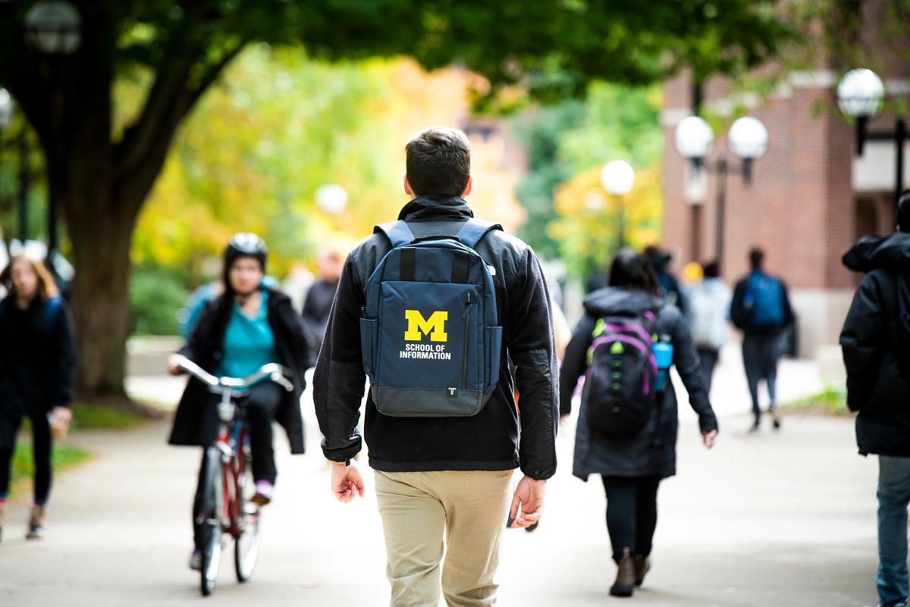

First impressions shape the trajectory of a partnership. The starting phase is where abstract project ideas turn into structured, professional commitments. By establishing clear team contracts, co-creating agendas, and aligning on project scope early, you build psychological safety within your team and trust with your client.
Learning how to navigate early ambiguity is one of the most valuable professional capabilities you will gain at UMSI.
Phase 2: Starting the Experience
Establishing professional communication, conducting initial meetings, and finalizing partnership agreements.
Focus & Objectives
Partner Communication: Draft clear, professional outreach to launch working relationships.
First Meetings: Structure productive kickoff meetings that define roles and project bounds.
Formalizing Agreements: Document team commitments and scope agreements shared by all stakeholders.
A Typical Kickoff Meeting Agenda
Introductions and background on the team and the partner organization
Review of the project's goals, scope, and intended users
Discussion of roles, responsibilities, and decision-making authority
Agreement on communication channels and meeting cadence
Confirmation of timeline, milestones, and next steps
Featured Resources & Handouts
Initial Client Email Examples: Plug-and-play email templates for first contact with clients and partners.
Initial Client Meeting Sample Agenda: Step-by-step structure for running a professional kickoff call.
Student-Client Partnership Guide: Standard guidelines for managing expectations and deliverables.
Student Org-ELO Partnership Agreement Template: Formal contract establishing roles between student teams and ELO.
SO-ELL Schedule: Overview of key milestones, deadlines, and submission dates.

Every strong partnership starts with a clear, well-prepared first meeting.
Ready to Get to Work?
Once your team and your partner have agreed on roles, scope, and communication norms, you are ready to begin executing the project and navigating the work as it unfolds.